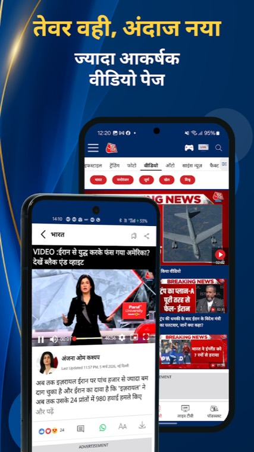
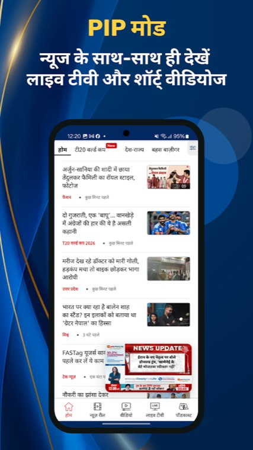
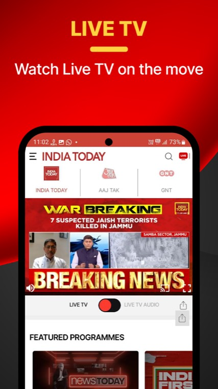
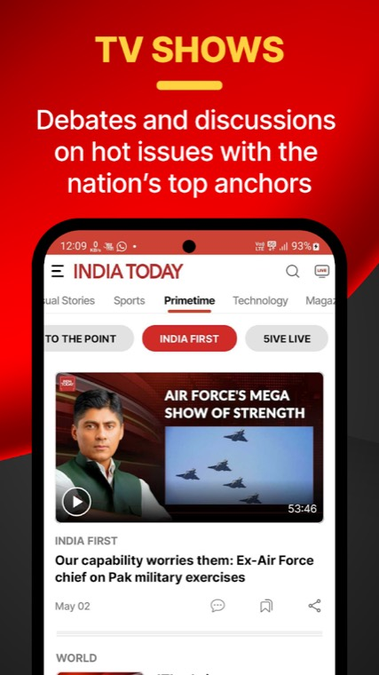
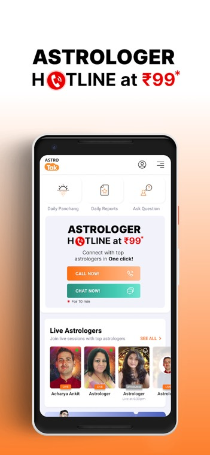
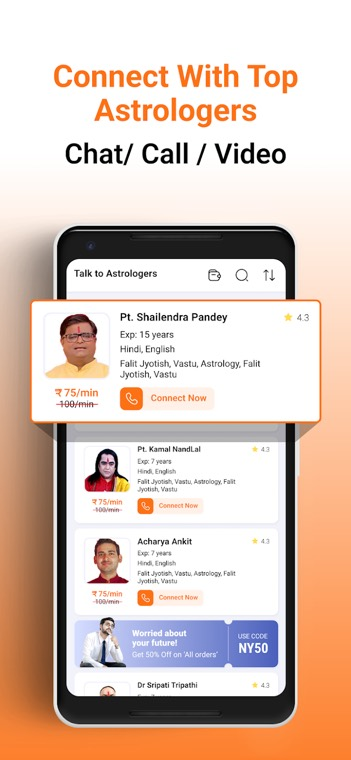
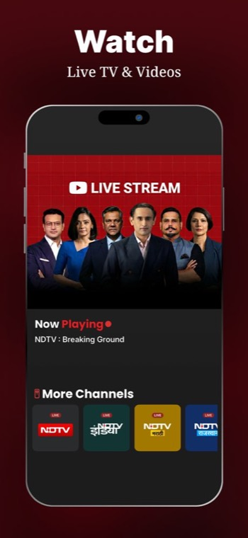
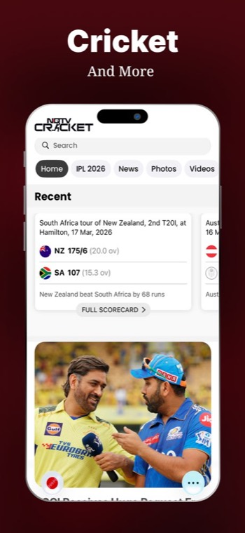

Aaj Tak
India Today GroupIndia's leading Hindi news app, with 100M+ downloads: live TV, short-form video, picture-in-picture and breaking news at scale.
Engineering Leader | Mobile, Connected TV & OTT
11+ years building and scaling high-traffic consumer apps, live and on-demand video, and ad-monetised platforms, and leading the cross-platform engineering teams behind them. Proven at scale in news and media, where traffic can multiply within minutes.


India's leading Hindi news app, with 100M+ downloads: live TV, short-form video, picture-in-picture and breaking news at scale.


Flagship English news app with live TV, top stories, TV shows and the NewsPresso quick-read format.


Astrology consultation app with chat, voice and video calls to astrologers, plus online puja booking. A transactional consumer product beyond news.


News, live TV and cricket apps. I built the ExoPlayer live TV player with IMA ads and election-results features, and owned NDTV Cricket end to end.
Screenshots are from the public app store listings and show the current versions of each app.
Audiences were moving to the living room, but each TV ecosystem — Android TV, Fire TV, Apple TV, LG webOS, Samsung Tizen, Roku, Fire TV Vega OS — has its own stack, store, certification and remote-control model.
Owned the CTV programme end to end: platform roadmap, team allocation, partner coordination, certification and releases.
My callI chose not to build a separate app for every TV. Where playback, ads and performance matter most (Android TV, Fire TV and Apple TV), we went native with Kotlin and Swift. For webOS, Tizen and other web-based TVs, we built one shared web codebase with React, Enact and Lightning. That split let the same team ship to 7+ platforms without the cost of maintaining seven separate apps.
For any high-traffic consumer app, the busiest moments are exactly when it can't afford to be slow or crash. In news, elections and breaking stories can multiply traffic within minutes, with no warning.
Led the Android & iOS engineering, first as Tech Lead and then as Engineering Manager: architecture, performance, release planning and production incidents.
My callBefore big traffic events, I don't rely on hope. I run a playbook. We freeze releases early and roll out fixes ahead of time. Remote Config kill switches can turn off heavy widgets and ads instantly. Feeds are cached and served from a CDN, so spikes never hit our origin APIs. The home feed is lighter, and ads load without blocking content. On the day, a live war room watches Crashlytics and analytics in real time.
Video ads behave differently on every platform. Live streams need server-side ad insertion that matches the broadcast, and every lost ad means lost revenue.
Played a key role in the ad tech implementation across mobile and CTV, working as the engineering counterpart to AdOps and revenue teams.
My callThe hardest problems were ads that failed silently: no-fill and playback failures that looked different on every TV, player and SDK. Instead of fixing them one by one, I set up a single way to investigate them across platforms. It checks ad requests, device signals and player behaviour with IMA and SSAI, and we work through it jointly with AdOps. Issues now get traced to their root cause instead of bouncing between teams.
One product strategy, three kinds of screen.
Native Android & iOS plus Flutter, for Aaj Tak, India Today, Business Today, The Lallantop, Astro Tak, and earlier NDTV News & NDTV Cricket.
Native and web-based TV apps on Android TV, Fire TV, Vega OS, Apple TV, LG webOS, Samsung Tizen, Roku and Comcast, plus FAST channels, with live streams, VOD and ad monetisation.
Bringing our video and audio content into in-car infotainment on Android Auto, Android Automotive OS (AAOS), AOSP-based head units and webOS-based automotive platforms. This covers driver-safe, audio-first experiences on the front screen and full video on rear-seat entertainment screens.
Across four organisations, I grew from mobile app developer to Tech Lead to Engineering Manager, so I lead with a hands-on understanding of the systems my teams own.
Leading and mentoring engineers across Android, iOS, Flutter, CTV and automotive apps, and managing external development and QA partners.
Architecture direction (Compose, Hilt, modularisation) and per-platform stack choices for TV, balancing speed, cost and maintainability. I also bring AI-assisted engineering (Claude Code, MCP) into the team's workflow.
Roadmaps, release planning and prioritisation across four brands and many apps, with clear trade-offs for stakeholders.
Monitoring, incident response and preparing for peak-traffic events, so stability is measured and not assumed.
Day-to-day work with product, editorial, AdOps, QA, business teams and external platform partners.
Taking existing products to new platforms such as Smart TVs and automotive to reach new audiences and revenue.
Lead 15+ engineers across Android, iOS, Flutter, CTV and automotive apps. Own app strategy for Aaj Tak, India Today, Business Today and The Lallantop on mobile and 7+ TV platforms.
Owned the complete Android & iOS app ecosystem: architecture, product development and delivery.
NDTV News, NDTV Cricket and NDTV Gadgets. ExoPlayer + IMA video player, election-results features, ad network optimisation.
Car research app covering features, pricing, on-road price and insurance. My first automotive-domain product.
Built features and UI across multiple client Android apps.